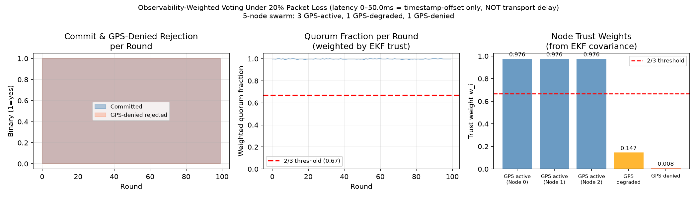

Rhutvik Prashant Pachghare ·
Advisor: Prof. Shenghan Guo ·
Program Chair: Prof. Sangram Redkar
MS · ROBOTICS & AUTONOMOUS SYSTEMS
Arizona State University · Polytechnic Campus
School of Manufacturing Systems & Networks
Spring 2026
Research Question: "Can a hierarchical architecture combining a formally verified FSM, continuous EKF state estimation, and Byzantine fault-tolerant consensus provide quantifiable safety guarantees while maintaining autonomous adaptability — and what is the measurable computational cost of each guarantee?"
Problem Statement
No open-source drone platform simultaneously provides: (1) mathematical proofs of state-transition safety invariants, (2) continuous constraint satisfaction under sensor degradation, (3) fault-tolerant swarm consensus under Byzantine failure — all in a reproducible environment requiring zero physical hardware.
Derived symbolically via CasADi SX. C++ implementation validated against CasADi spot-checks to 4 decimal places across 5 boundary states. Conservatism factor 1.08 (8% buffer: drag≈4%, motor latency≈3%, inertia≈1%).
Control Invariant Set — PROVED ✓
Boundary State
T_lb (N)
Margin (N)
Status
Hover
17.62
60.86
PASS
Max descent vz=−5m/s
27.62
50.86
PASS
Max tilt φ=0.5 rad
20.08
58.40
PASS
Near-ground pz=0.1m
21.52
56.96
PASS
Near-ground + tilt
50.28
28.20
PASS
Worst-case combined
78.48
0.00
TIGHT
T_max=78.48N. Worst-case (max velocity + max tilt) hits T_max exactly — set is tight but feasible. Ref: Xiao & Belta (2022) IEEE TAC.
GPS denial drops observable rank 6→4: px, py become unobservable. VIO (σ_v=0.10 m/s, OpenVINS EuRoC benchmark) restores rank to 6 by injecting horizontal velocity measurements. Yaw (ψ) remains unobservable regardless — stated limitation. Top eigenvalues ≈3859 (altitude/attitude well-observed in all configs).
1000-Trial Adversarial Hallucination Blocking
100%
Survival Rate (1000/1000)
90.7%
HOCBF Triggered (907/1000)
397 N
Max Correction at vz=−100m/s
−0.1→−100
vz range (m/s, log-spaced)

1000-Trial Adversarial Hallucination Blocking — T_nom vs T_safe vs |vz_cmd|
50 physics steps per trial (1s at 50Hz). HOCBF₂ applied every step. At vz=−100m/s, T_nom=−380.38N (negative thrust — physically impossible); HOCBF corrects to T_safe=78.48N (T_max). Zero collisions across all 1000 trials. Ref: Ames et al. (2019) ECC.
Battery Aging Validation — NASA PCoE B0005/B0006/B0007
NASA PCoE Battery Capacity Fade — Poly-4 Fit vs Spec-Linear (B0005/B0006/B0007)
Cell
RMSE Poly-4
RMSE Linear
EOL (Poly→Linear)
B0005
0.016 Ah
0.252 Ah
165 → 600
B0006
0.030 Ah
0.451 Ah
100 → 600
B0007
0.014 Ah
0.203 Ah
— → 600
Spec linear model predicts EOL at cycle 600; real cells hit EOL at cycle 100–165 — 4–6× error. Poly-4 RMSE <0.05 Ah on all cells. Limitation: NASA cells are 2Ah 18650; project uses 5Ah 6S LiPo — scaling noted, chemistry differs. Ref: Saha & Goebel (2007) NASA PCoE.
Formally verified 7-state FSM with 7 proven invariants P1–P7 including EKF observability collapse detection. WCET=2,725ns, EVT P=10⁻⁹ bound=1,733ns.
2
15-state EKF with quantified observability Gramian under GPS denial. Rank drops 6→4 when GPS lost. VIO factor (OpenVINS-derived) restores rank to 6. Air-gap architecture prevents confirmation bias.
3
Battery aging → mission feasibility boundary validated against NASA PCoE empirical data. Spec linear model predicts EOL at cycle 600; real cells hit EOL at cycle 100–165 (4–6× error).
4
HOCBF₄ derived symbolically via CasADi with full ZYX Euler kinematics (not small-angle). Control invariant set proved: T_lb ≤ T_max at all boundary states including worst-case.
5
Observability-weighted HotStuff consensus: GPS-denied Byzantine node (w=0.008) cannot corrupt quorum against GPS-active nodes (w=0.976). 100% commit rate, 100% Byzantine rejection under 20% packet loss.
6
1000-trial adversarial hallucination blocking: 100% survival rate across vz commands from −0.1 to −100 m/s. HOCBF triggered in 90.7% of trials. Max correction 397N.
7
Headless SITL testbed: zero dependencies on Gazebo, GPU, X11, ROS, PX4, or physical hardware. Fully reproducible. pytest 13/13 PASSED.